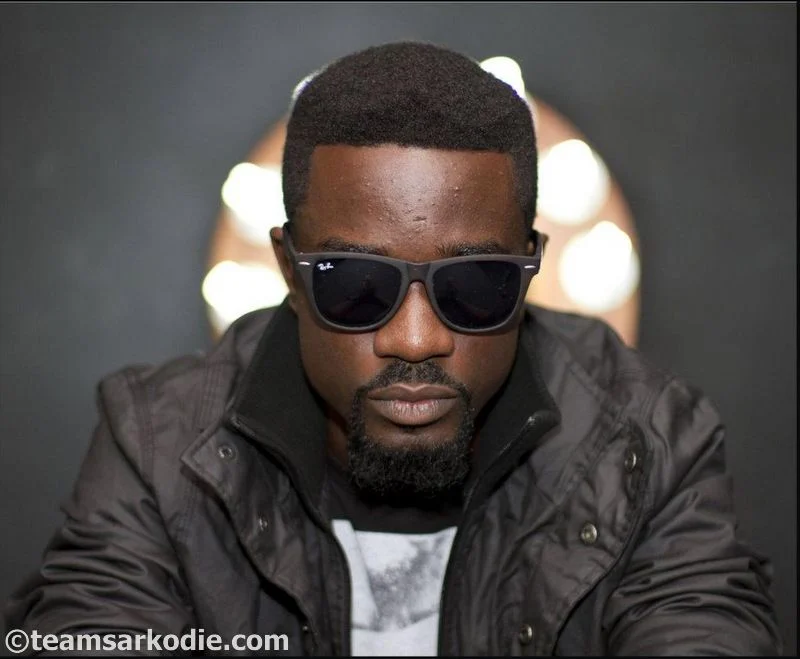
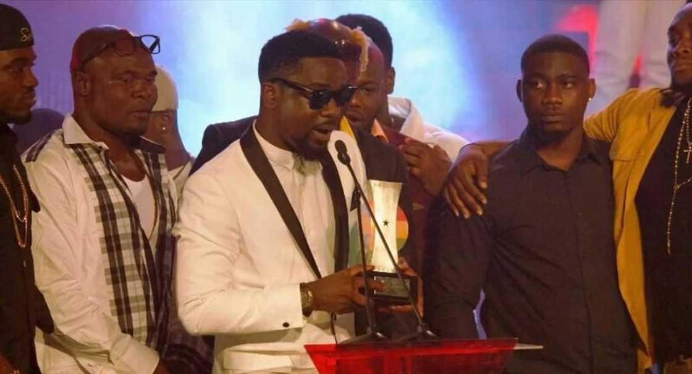

SARKODIE(Rapper)

Michael Owusu Addo (born 10 July 1985),[2] known professionally as Sarkodie (/sɑːrˈkɔːdiɛ/), is a Ghanaian rapper, songwriter, and entrepreneur from Tema.[3] He started rapping at a young age and has since become a household name in the Ghanaian and Global music industry. His contributions to the Ghanaian music industry have earned him numerous accolades, including TGMA then Vodafone Ghana Music Award (VGMA) for "Artiste of the Decade".[4] He was announced the first winner of BET's Best International Flow Artist at the 2019 BET Hip Hop Awards.[5] He is also considered one of the major proponents of the Azonto genre and dance and as the most successful African rapper of all time.[6] Due to the variety of musical genres he can perform in, Sarkodie is referred to as a "multifaceted rapper" and frequently raps in his native language, Twi
LIFE AND CAREER
Early life and career beginnings
Sarkodie, the fourth of five children was born on 10 July 1985.[7][8] He was raised in Koforidua before his parents moved to Tema where he started schooling. In his track, "Mile 7 Saga", he talked about how he was maltreated by a guardian he lived with. He attended Tema Methodist Day Senior High School and proceeded to IPMC College of Technology, where he earned a degree in graphic design. Sarkodie began his music career as an underground rapper and gained recognition through rap competitions such participating in Adom FM's popular rap competition Kasahare Level. He met his former manager Duncan Williams of Duncwills Entertainment while participating in the aforementioned competition. He also met musicians Edem and Castro, who introduced him to Hammer of The Last Two, an established record producer. Impressed by his rap flows, Hammer allowed Sarkodie to record two tracks for Edems maiden album Volta Regime
ALBUMS
- 2009–2012: Makye and Rapperholic
-
Following his collaboration with Hammer, Sarkodie recorded his debut album Makye. Its production was primarily handled by Killbeatz and Jayso. The album features guest appearances from Kwaw Kese, J-Town, Sway, and Paedae of R2Bees. Makye received positive reviews from critics and fans. It was supported by a concert held at Holy City Gardens in Accra.[10] On 16 September 2009, Sarkodie performed alongside Busta Rhymes at the Busta Rhymes Live in Ghana concert.[11] In 2010, his "Push" and "Baby" songs were ranked ninth and thirteenth on Joy FM's Top 50 songs of 2009, respectively.[12] The album's lead single "Baby" which features Mugeez of R2bees became an instant hit and gave Sarkodie exposure.[13]
Sarkodie's second studio album Rapperholic was released in 2012. It features guest appearances from Efya, Chidynma, Mugeez of R2Bees, Obrafour, Jayso and EL. The album was supported by five singles: "Good Bye", "One Time For Your Mind", "You Go Kill Me", "Living Legend", and "Onyame Nhyira". It received positive reviews from music critics. Sarkodie went on a nationwide tour to support the album. Rapperholic earned Sarkodie his first BET nomination and subsequent win. Sarkodie was also featured on the BET Hip Hop Awards cypher alongside Talib Kweli, Jean Grae and Ab-Soul. He was the only African act featured on the cypher.[14]
On 7 July 2012, Sarkodie kicked off his tour of Canada.[15] He toured the United States in August 2012, performing in cities and states such as New York City, Ohio, New Jersey, Maryland, Atlanta, Chicago, Texas and Massachusetts.[16] After releasing Rapperholic, Sarkodie embarked on a tour to promote the album.[17] On 27 August 2012, Sarkodie performed alongside R2Bees, Fally Ipupa and Iyanya at the Africa Unplugged Music Festival.[18] In 2012, Sarkodie performed "How Low" with Ludacris at the 020 Live concerts
- 2013–2014: Sarkology, Sarkcess Music, and Africa Rising Campaign
-
On 30 October 2013, Sarkodie released the official remix of "You Go Kill Me". The song peaked at number 1 on various charts in Ghana. Its remix features vocals from Wizkid, Ice Prince, Navio and EL.[20] In January 2014, Sarkodie released his third studio album Sarkology. Primarily recorded in Twi, the album features guest appearances from Fuse ODG, Davido, Tiwa Savage, Banky W., Timaya, 2 Face Idibia, Efya, Mugeez, Obrafour, Burna Boy, Vivian Chidid, Vector, Silvastone, Sk Blinks, Stonebwoy, Joey B, J Town, Lil Shaker, Raquel, Sian, Kofi B, and AKA. Its production was handled by Magnom, Hammer, Killbeatz, Masterkraft and Silvastone, among others. The album's launch concert was held at the Accra Sports Stadium in December.[21]
Sarkodie released the official remix of "Adonai". It features vocals from Castro and appeared on Capital Xtra's list of the Top 35 Afrobeats Songs.[22] Sarkodie launched the Sarkcess Music record label in 2014. As part of the launch, he premiered the video for "Adonai" (Remix) and "Special Someone". Sarkodie also released the songs "Megye Wo Girl", "Love Rocks", "Chingum", and "Whine Fi Me" under the label.
On 3 May 2014, Sarkodie performed at the 15th edition of the Ghana Music Awards.[23] On 7 June 2014, he joined Miguel on stage to perform the latter's single "How Many Drinks?" at the MTV Africa Music Awards.[24] In June 2014, Sarkodie collaborated with Mi Casa, Lola Rae, Davido, Diamond Platnumz and Tiwa Savage to record "Africa Rising", a song for DSTV's campaign of the same name. The campaign was designed to inspire Africans to partake in community-based social investment projects. The music video for "Africa Rising" was released on 24 June 2014. It was shot and directed by the South African production house Callback Dream
- 2015–2018: Mary and Highest
- On 10 June 2015, Sarkodie released the Ace Hood-assisted "New Guy". It was released for digital consumption on 10 June 2015, through Sarkcess Music and Ivy League Records. Written by the two artists and produced by CedSolo, "New Guy" is an African hip hop and hip-hop song that contains alternating rap verses, while its lyrics deal with Sarkodie's desire and motivation for success. Development for "New Guy" began in early 2015 when Sarkodie paid a total of $25,000 to cover the production fees associated with the recording.[26] He also wanted Ace Hood to appear on the track because he considered him "one of the world's most powerful rappers".[27]
On 12 September 2015, Sarkodie released Mary, a live album named after his grandmother who died in 2012.[28][29] "Mewu" was released as the lead single from the album two months prior.[30] An autograph session for the album was held at the West Hills Mall in Accra. Sarkodie sold nearly 4,000 copies of the album on the first day of its release.[31] In February 2016, he spoke to a group of Harvard Business School students. Themed "The Art of the Hustle", his speech was primarily about the challenges associated with being an African musician. Sarkodie also performed at the event following his speech.[32]
Sarkodie held the fourth edition of his Rapperholic concert on Christmas Day. Tickets for the event sold out within 72 hours of its release. The concert featured additional performances from Fuse ODG, R2Bees, Wizkid, Samini, VVIP, Efya and Shatta Wale.[33] On 11 March 2016, Sarkodie performed with the music band, The Composers at the O2's Indigo venue; the event was hosted by DJ Abrantee.[34]
Sarkodie released his fifth studio album Highest on 8 September 2017. It comprises 19 songs, including 3 interludes and a bonus track.[35] Released through Sarkcess Music and Dice Recordings, the album features guest appearances from Jesse Jagz, Moelogo, Flavour, Korede Bello, Victoria Kimani and Big Narstie. Highest was primarily produced by Jayso, with additional production from Masterkraft, TSpize, Ced Solo, Nova and Guilty Beatz.[36]
- 2019: Alpha and Black Love
-
Sarkodie released his debut extended play Alpha in June 2019.[37][38] The 6-track EP features guest appearances from Joey B and Ebony Reigns.[39] Sarkodie teased his collaboration with Reigns during the Ebony Reigns concert, which commemorated the late singer.[39] He released his fifth studio album Black Love on 20 December 2019.[40] It features guest artists such as Mr Eazi, Efya, Donae'o, Idris Elba, Stonebwoy, Tekno, Maleek Berry, Herman Suede, King Promise and Kizz Daniel.[41] The album was supported by the previously released singles "Party & Bullshit", "Saara", "Do You" and "Can't Let Go".[41] In an interview with OkayAfrica in November, Sarkodie said the album explores themes of black love and relationships.[41] On 19 April 2021, Sarkodie announced his soon-to-be-released 6th Studio Album, entitled "No Pressure". A trailer video was uploaded on YouTube, in anticipation of what fans would expect from the album. However, on 25 July 2021, Sarkodie announced a 5-day countdown of the album which would be released on 30 July 2021
- 2021: No Pressure Album
-
Sarkodie released the album, No Pressure, on 30 July 2021.[43] The album features Wale, Vic Mensa, Giggs, Cassper Nyovest, Harmonize, Oxlade, Kwesi Arthur, Darko Vibes, Medikal, and MOGmusic
AWARDS

| Awards |
Wins |
nominations |
| Ghana music Award |
30 |
242 |
| Mobo |
0 |
0 |
| Independent music Award |
1 |
1 |
| Chanel o music award |
0 |
3 |
| Nigeria Entertainment award |
2 |
3 |
| The future african award |
0 |
1 |
| 4syte music video awards |
20 |
41 |
| BET awards |
2 |
4 |
| MTV african music award |
1 |
3 |
GENRES
- Hip-hop
- Hip-life
- Afrobeats
- Rap
- Dancehall
labels
- Duncwills Entertainment(former)
- Sarkcess Music